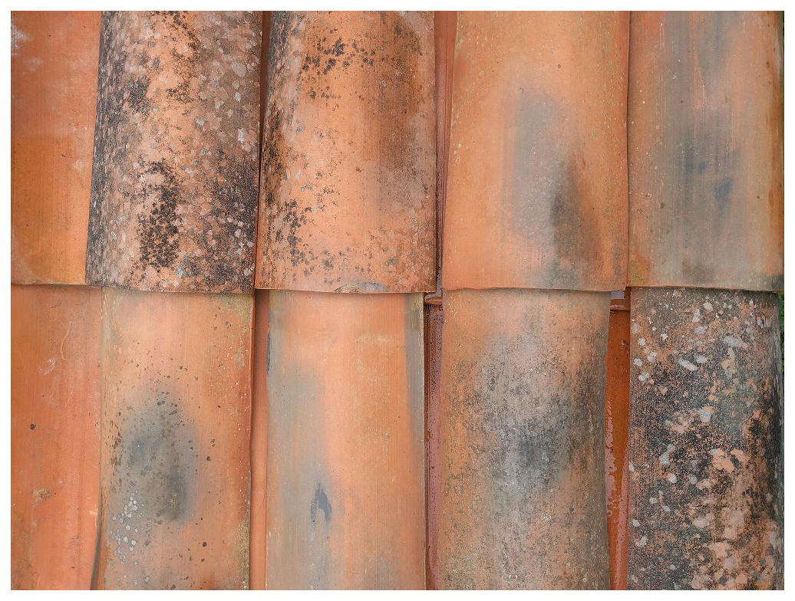
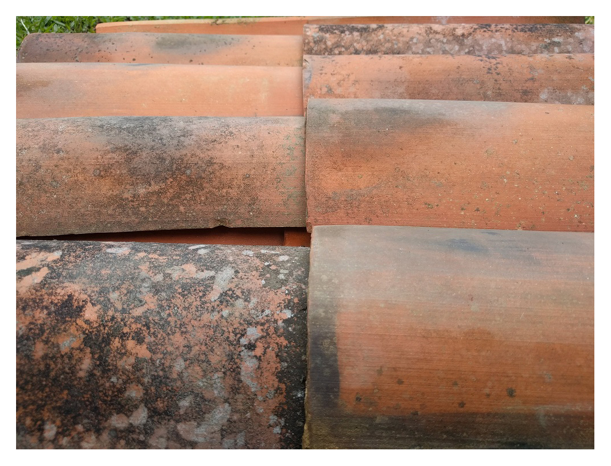
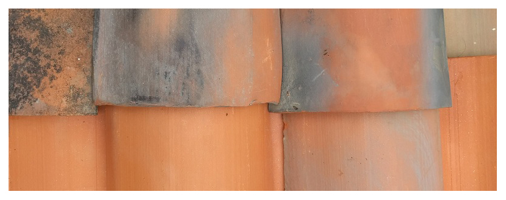

Fazemos telhas por medida e réplicas de qualquer modelo que já não se encontre no mercado.
Somos uma empresa escializada no fabrico de telhas de barro à antiga portuguesa, com um aspeto rústico devido ao processo de fabrico essencialmente artesanal. A sua tonalidade com manchas escuras provocadas pela cozedura com temperaturas superiores a 1000 ºC, dá ao telhado um aspeto rústico e antigo. Utilizamos técnicas tradicionais e processos produtivos modernos, garantindo autenticidade no acabamento.
Temos todas as competências para garantir produtos de qualidade e respostas profissionais a todas as suas solicitações.
As nossas telhas são ideais para restauros em moradias, monumentos e centros históricos.


